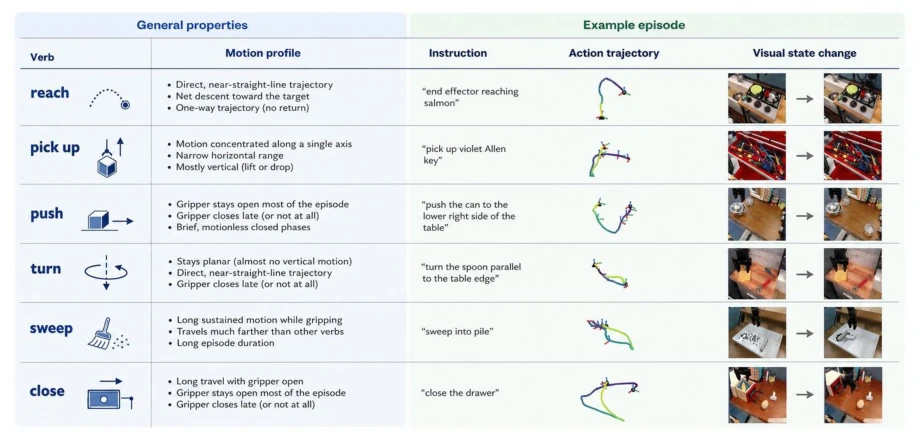
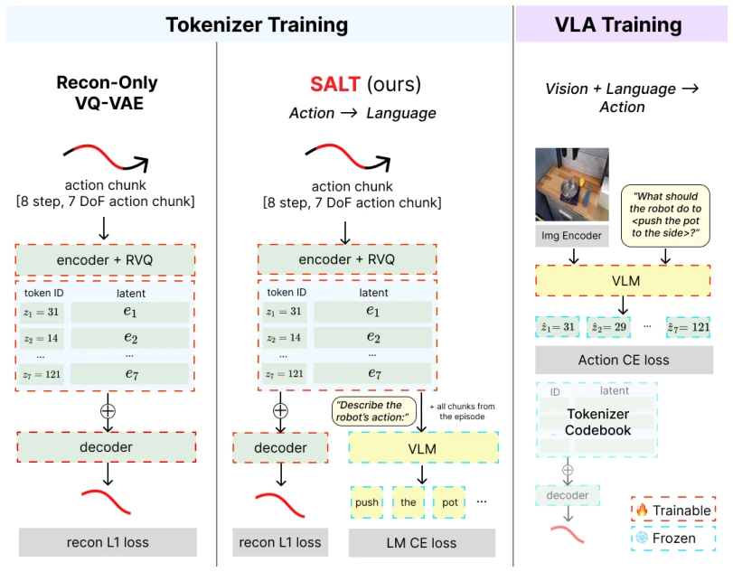
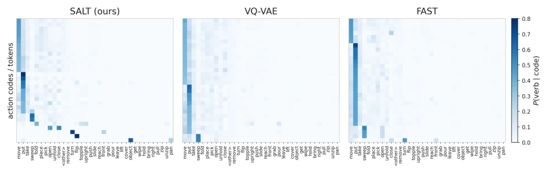
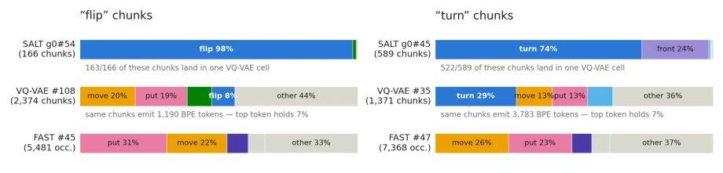
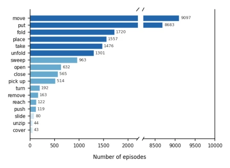
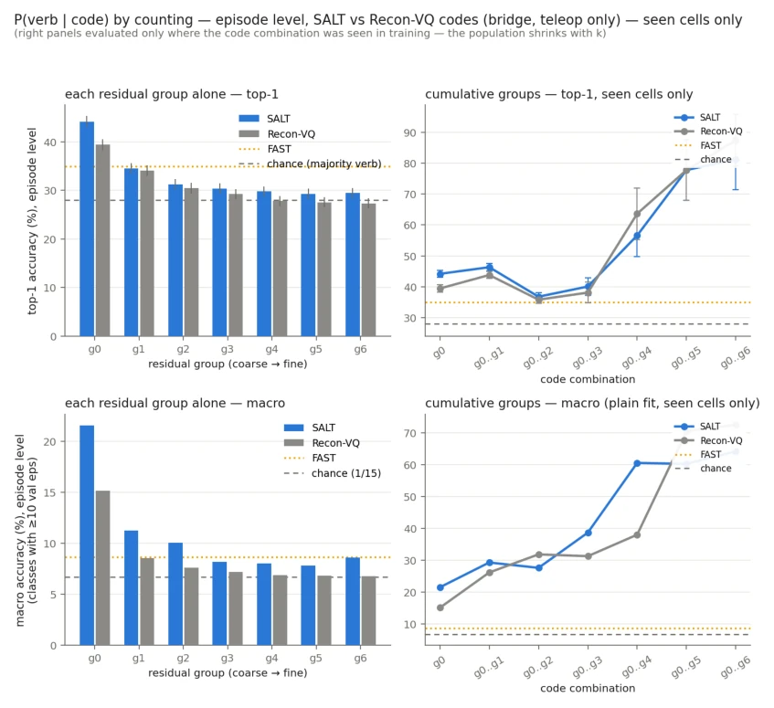

This paper pours cold water on VLA researchers obsessed with "Reconstruction is Justice": merely reconstructing action trajectories with pixel-level precision does not imply that the robot understands what you are saying. The authors sharply point out that existing discrete action tokenizers (such as Bin and FAST from RT-1/RT-2) ruthlessly erase the "verb semantics" embedded in actions while pursuing low L1/L2 loss (for example, "push" and "place" have similar endpoints but vastly different processes). Although the SALT method merely adds an auxiliary task to VQ-VAE, the effect is immediate, with success rates skyrocketing from 42% to 71%, truly a paradigm of "adding a lock to open a new door". However, the authors did not overstate their claims, honestly acknowledging limitations such as the scarcity of verb types in the dataset and the small model scale; this "not making grandiose claims" research attitude deserves commendation.
研究动机Motivation
现有Vision-Language-Action (VLA) 模型（如Brohan et al., 2023a; Kim et al., 2024）通常将动作表示为离散token，其训练目标主要聚焦于在欧几里得空间内的轨迹重建（Reconstruction）。然而，这种设计存在根本性缺陷：数值上的接近（低L1/L2损失）并不等同于语义上的等价。论文指出，动词（Verbs）不仅描述了动作的视觉结果（Goal），还编码了执行方式（Motion Dynamics），如接触模式、机械臂时序等。现有的离散化方法（如Bin, FAST, VQ-VAE）在压缩过程中系统性地丢失了这些动词特有的语义信息，导致下游策略无法区分语义不同但数值相近的动作。这造成了语言与动作表征之间的“语义鸿沟”，使得机器人难以理解指令中关于“如何做”的细微差别，限制了语言条件控制的性能。
Existing Vision-Language-Action (VLA) models (e.g., Brohan et al., 2023a; Kim et al., 2024) typically represent actions as discrete tokens, with training objectives primarily focused on trajectory reconstruction (Reconstruction) within Euclidean space. However, this design has a fundamental flaw: numerical proximity (low L1/L2 loss) is not equivalent to semantic equivalence. The paper points out that verbs (Verbs) not only describe the visual outcome of an action (Goal) but also encode the execution method (Motion Dynamics), such as contact patterns and manipulator timing, etc. Existing discretization methods (such as Bin, FAST, VQ-VAE) systematically lose these verb-specific semantic information during the compression process, causing downstream policies to fail to distinguish actions that are semantically different but numerically similar. This creates a "semantic gap" between language and action representations, making it difficult for robots to understand the nuances of "how to do" in instructions, limiting the performance of language-conditioned control.

Figure 1: Verbs describe both motion dynamics and action goal. Six BridgeV2 verbs with their characteristic motion profile (trajectory shape, axis, gripper timing) and one example episode each (instruction, 3D end-effector trajectory, first/last frames). Profiles are derived from action trajectories of the verb, using pre-defined formulas. Recipe in (Appendix B).
The paper proposes SALT (Semantically ALigned action Tokenizer), a semantically aligned action tokenizer. Its core idea is that when training the action tokenizer, not only is it required to reconstruct the original action, but its quantized latent representations (Latents) must contain sufficient information so that a frozen Vision-Language Model (VLM) can "guess" the original natural language instruction from them. The specific Pipeline is as follows: First, segment the continuous 7-DoF action trajectory into blocks, map them to discrete codebook indices (Codebook Indices) via a residual VQ-VAE encoder, and reconstruct them into quantized latent vectors. Unlike traditional VQ-VAE, SALT introduces an auxiliary alignment loss (L_align): taking the quantized latent vectors of all action blocks in the same episode as a prefix (Prefix), inputting them into a frozen pre-trained language model (pLM), requiring the pLM to generate the natural language instruction corresponding to that episode. Gradients are backpropagated to the tokenizer's encoder and codebook via the Straight-Through Estimator. This process forces the tokenizer to cluster actions with similar language descriptions into the same discrete codes while maintaining high reconstruction accuracy, thereby preserving semantic structure within the discrete space. After training is completed, the tokenizer is frozen and used for training downstream VLA policies, where the policy only needs to predict discrete codebook indices.

Figure 2: SALT: semantically aligned action tokenization for VLAs. Left: a reconstruction-only VQ-VAE tokenizer encodes an 8-step, 7-DoF action chunk with a residual-VQ encoder and is trained on reconstruction alone. Middle (SALT): the same architecture adds a generative alignment pressure: the quantized latents of all chunks in an episode are fed, with a describe prompt, to a frozen VLM that must generate the episode’s instruction, and the LM cross-entropy shapes the encoder and codebook through the straight-through quantizer. Right: during VLA training, the VLM backbone predicts action-token IDs from vision and language (action cross-entropy), and the frozen tokenizer codebook and decoder turn predicted IDs into executable actions.
实验Experiments
实验在BridgeV2数据集上进行，评估环境为SimplerEnv（WidowX机械臂）。基线包括仅重建的VQ-VAE分词器和FAST分词器。主要指标为SimplerEnv中的任务成功率（Rollout Success Rate）以及动词可解码性（Verb Decodability，即从动作token预测动词的Macro-F1）。结果显示，SALT在SimplerEnv上取得了71.9%的平均成功率，显著优于VQ-VAE（42.7%）和FAST（31.2%）。在动词解码任务中，SALT的Token ID Macro-F1达到39.1%，高于VQ-VAE的37.3%。更有趣的是，分析发现SALT学习到了高度语义专用的码（Codes），例如专门对应“flip”或“turn”的码，而基线方法则将这些动作混在通用的、语义模糊的码中。消融实验表明，这种语义对齐并未牺牲动作重建的保真度（Reconstruction Fidelity），证明了在离散化过程中同时保留语义和物理精度的可行性。
Experiments are conducted on the BridgeV2 dataset, with the evaluation environment being SimplerEnv (WidowX manipulator). Baselines include the reconstruction-only VQ-VAE tokenizer and the FAST tokenizer. The main metrics are the task success rate in SimplerEnv (Rollout Success Rate) and verb decodability (Verb Decodability, i.e., Macro-F1 of predicting verbs from action tokens). Results show that SALT achieved an average success rate of 71.9% on SimplerEnv, significantly outperforming VQ-VAE (42.7%) and FAST (31.2%). In the verb decoding task, SALT's Token ID Macro-F1 reached 39.1%, higher than VQ-VAE's 37.3%. More interestingly, analysis reveals that SALT learned highly semantic-specific codes (Codes), such as codes specifically corresponding to "flip" or "turn", while baseline methods mixed these actions into generic, semantically ambiguous codes. Ablation studies indicate that this semantic alignment did not sacrifice action reconstruction fidelity (Reconstruction Fidelity), demonstrating the feasibility of preserving both semantics and physical accuracy during the discretization process.

Figure 4: Per-code verb distributions, first residual group. For each tokenizer we show its 30 most verb-selective units — highest maxv P(verb | code) among codes/tokens used in ≥100 training chunks — as rows sorted by dominant verb; each cell is P(verb | code) by counting. Sharp verb-selective rows emerge for SALT across many verbs, including rare ones (flip 98%, turn 74%, pour, topple); the selective units of VQ-VAE (middle) and FAST (right) are confined to the most frequent verbs (put, sweep), with the remainder diffuse.

Figure 5: The same action chunks under three tokenizations. For SALT’s flip- and turn-dedicated codes, the verb composition of (top bar) the SALT code, (middle) the single VQ-VAE cell that receives almost all of the same chunks, and (bottom) the FAST BPE token receiving the largest share of their token occurrences. SALT dedicates a symbol; VQ-VAE lumps the chunks into a generic mixed cell; FAST distributes them across generic tokens with no dominant home. The front share of SALT’s turn code comes entirely from the instruction “lever vertical to front” — the same lever-turning action worded without “turn” — so the code unites this paraphrase with turn: the alignment tracks meaning, not surface wording.

Figure 6: Distribution of the 17 verb classes in BridgeV2 (episodes with ≥30 training examples). The two domi- nant verbs (move, put) comprise 65% of episodes; the long tail spans 15 additional verbs.

Figure 7: P(verb | code) by counting: majority-vote lookup accuracy on held-out episodes (seen code combinations). Top row: top-1 accuracy; bottom row: macro accuracy over classes with ≥10 validation episodes. Left: each residual group alone; right: cumulative group prefixes. SALT exceeds VQ-VAE at every group and prefix; FAST references dotted, chance dashed.